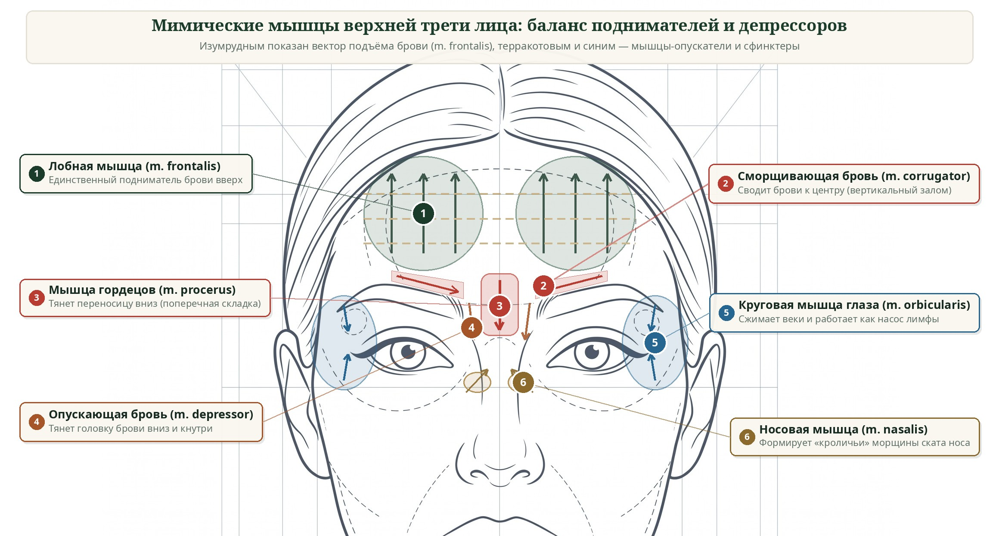

Ботулинотерапия верхней трети лица: как работает, кому подходит и чего ждать
Ботулинотерапия — не «заморозка» лица, а управляемое снижение активности конкретных мимических мышц. Разбираем, как препарат распределяется в тканях, почему результат зависит от анатомии, а не от «количества уколов», и какие ограничения важно обсудить с врачом до процедуры.
Коротко о главном
- Мишень ботулинотерапии — мышца, а не морщина. Препарат временно снижает передачу сигнала от нервного окончания к мышечному волокну: кожа над расслабленной мышцей перестаёт собираться в складку.
- Верхняя треть лица — единая система. Лоб, межбровье, наружные уголки глаз и спинка носа работают как связанный ансамбль: расслабление одной мышцы меняет нагрузку на соседние, поэтому зоны планируют вместе.
- Эффект обратим. Через несколько месяцев нервные окончания восстанавливают связь с мышцей, и подвижность возвращается полностью.
- Главный враг результата — не «слабое» средство, а неверная доза и неверная глубина. Именно от них зависят и естественность мимики, и риск опущения брови или века.
Суть проблемы: почему появляются мимические морщины
Мышцы, которые рисуют лицо
Мимические мышцы фасций не имеют: они вплетаются одним концом в толщу кожи (дерму), а другим крепятся к кости. Когда мышца сокращается, она тянет за собой кожу, и та собирается в складку строго перпендикулярно ходу мышечных волокон. Так возникают:
- горизонтальные линии лба формирует работа лобной мышцы (m. frontalis);
- вертикальные «заломы» между бровями создаёт сокращение мышцы, сморщивающей бровь (m. corrugator supercilii), у неё различают медиальную часть («головку») и латеральную («хвост»);
- поперечные складки на переносице образует тяга мышцы гордецов (m. procerus);
- косые складки у корня носа вызывает активность мышцы, опускающей бровь (m. depressor supercilii);
- радиальные «лучики» у наружного угла глаза закладывает сокращение латеральной порции круговой мышцы глаза (m. orbicularis oculi);
- «кроличьи» морщинки на боковых скатах носа собирает сокращение носовой мышцы (m. nasalis).

Лобная мышца — единственный «подниматель»
Важная анатомическая деталь: в верхней трети лица лобная мышца — практически единственная мышца, которая поднимает брови вверх. Все остальные в этой зоне работают как опускатели (депрессоры). Отсюда два практических следствия:
- Лобная мышца удерживает бровь в её обычном положении. Если расслабить её избыточно — бровь «съедет» вниз, появится ощущение тяжёлого взгляда и «нависших» век.
- Если полностью «выключить» опускатели межбровья, но не тронуть лоб, лобная мышца начнёт работать с перегрузкой — проявятся новые горизонтальные линии выше.
Почему складка становится постоянной: динамический и статический этапы
Пока работают только мышцы, морщина видна лишь в движении — это динамическая морщина. Со временем кожа в зоне постоянного сжатия теряет эластичность: волокна коллагена и эластина в дерме (среднем слое кожи, отвечающем за упругость) перестраиваются вдоль линии залома, и складка проступает уже в покое — становится статической. Поэтому ботулинотерапия эффективнее всего работает на динамическом этапе и как профилактика углубления заломов, но не заменяет работу с качеством самой кожи при выраженных статических изменениях.
В движении (динамика): линия собирается только при сокращении мышцы и полностью расправляется в покое — прямая задача для ботулинотерапии. В покое (статика): дермальный залом остаётся видимым даже при расслабленном лице — здесь после снятия мышечного спазма может потребоваться работа с матриксом дермы.
Как это работает: механизм, диффузия и дозировки
Механизм на уровне нервно-мышечного контакта
Ботулотоксин типа А действует как нейропротеин, который временно блокирует выброс ацетилхолина (вещества-передатчика сигнала) из окончания двигательного нерва. Сигнал «сократись» не доходит до мышечного волокна, мышца расслабляется. Сам нерв и сама мышца при этом не повреждаются: блокируется только синаптическая связь между ними, и со временем она полностью восстанавливается за счёт отрастания новых нервных терминалей (спраутинга).
Отсюда три принципиальных свойства препарата, о которых полезно знать пациенту:
- Действие развивается не сразу. Первые изменения обычно заметны на 3–5-й день, а окончательная картина формируется примерно к 14-му дню — именно на этот срок назначают контрольный осмотр.
- Эффект временный. Подвижность возвращается через несколько месяцев, индивидуально — в среднем в диапазоне 3–6 месяцев, после чего процедуру повторяют по показаниям.
- Работает локально в зоне введения. Препарат не «путешествует» по всему организму, но распределяется примерно на 1,5–2 см от точки укола — этот радиус диффузии и определяет геометрию разметки.
Радиус диффузии: почему точек мало, а эффект широкий
Одна из ключевых идей современной клинической практики: препарат, введённый в одну точку, распространяется примерно на 1,5–2 см вокруг. Поэтому «плотная сетка» уколов через каждый сантиметр не нужна — достаточно попасть в брюшко целевой мышцы, и раствор равномерно распределится по ходу волокон.
При этом направление среза и наклон иглы меняют вектор распределения: при угле около 45° вверх раствор уходит преимущественно кверху, а при перпендикулярном введении расходится симметрично. Именно поэтому результат процедуры зависит не от «количества проколов», а от точности выбора глубины и вектора введения.
Дозировка: почему «единицы» нельзя сравнивать напрямую
Доза измеряется в единицах действия (ЕД), и здесь есть важный клинический нюанс: единицы разных брендов ботулотоксина биологически не эквивалентны. У разных препаратов отличаются молекулярная масса белкового комплекса, активность и профиль диффузии. Поэтому механически переносить схему «мне в другой клинике кололи 20 единиц» на другой препарат некорректно.
Ориентировочные диапазоны, которые обсуждаются в клинической практике (в пересчёте на классические препараты со стандартной активностью 100 ЕД во флаконе), выглядят так:
| Зона коррекции | Ориентировочная доза на точку | Клинический комментарий |
|---|---|---|
| Лоб (m. frontalis) | 1,5–2 ЕД (у мужчин нередко 3–4 ЕД) | Начинают с нижней границы; зона наиболее чувствительна к передозировке и опущению бровей (подробнее во 2-й части) |
| Межбровье (головки m. corrugator и m. procerus) | 3–5 ЕД (у мужчин 5–7 ЕД) | Мощные мышцы-депрессоры: занижать дозу невыгодно, иначе залом вернётся |
| Дополнительные точки у корня носа (m. depressor supercilii) | около 1 ЕД | Вводятся поверхностно (микропапульно) строго по показаниям при смещении головки брови вниз |
| Наружные уголки глаз («гусиные лапки», m. orbicularis oculi) | около 2 ЕД на точку (2–3 точки с каждой стороны) | Выбор между 2 и 3 точками зависит от склонности к отёкам (3-я часть; про микропапулы и наппаж под глазами — в 4-й части) |
| Спинка носа (m. nasalis) | около 2 ЕД на точку (иногда 3 ЕД) | Требует обязательного учёта соседней мышцы, поднимающей верхнюю губу |
Приведённые цифры служат ориентиром, а не шаблоном: доза всегда подбирается под массу и тонус конкретной мышцы, пол и анатомию. Базовый принцип безопасности: разумнее начать с умеренной дозы и при необходимости добавить на 14-й день, чем получить избыточное расслабление, которое придётся пережидать.
Кому подойдёт, а когда лучше воздержаться
Показания и реалистичный результат
| Клиническая задача | Что реально даёт метод |
|---|---|
| Горизонтальные мимические линии лба | Линии разглаживаются, лоб становится ровнее при сохранении лёгкой естественной подвижности |
| Вертикальные заломы между бровями | Уменьшение глубины и «угрюмого» выражения; при стойких дермальных заломах — частичное сглаживание в покое |
| Поперечные складки переносицы | Заметное уменьшение залома при активной мимике |
| «Гусиные лапки» у углов глаз | Сглаживание радиальных морщин при улыбке, нередко — лёгкий лифтинг латерального края брови |
| «Кроличьи» морщины на спинке носа | Уменьшение диагональных складок при сморщивании носа и смехе |
| Профилактика фиксации заломов | Сдерживание перехода динамических мимических морщин в глубокие статические |
Противопоказания и ограничения
- Абсолютные противопоказания: беременность и грудное вскармливание; миастения и другие нарушения нервно-мышечной передачи (включая синдром Ламберта — Итона); повышенная чувствительность к компонентам препарата; острые инфекции и воспалительные элементы в зоне предполагаемых уколов.
- Требуют отдельного решения врача: приём антибиотиков-аминогликозидов, макролидов или миорелаксантов; нарушения свёртываемости крови и приём антикоагулянтов; выраженные грыжи верхних и нижних век; синдром «сухого глаза»; анатомически низкое исходное положение бровей; перенесённая хирургическая блефаропластика (наличие рубцов в зоне век требует учёта риска выворота века — эктропиона).
- Ограничивают схему, но не запрещают процедуру: склонность к утренней отёчности и пастозности, отёчно-деформационный тип старения. В этих случаях часть точек (например, нижнюю точку у глаза) сознательно исключают ради сохранения лимфодренажа.
Обязательно сообщите врачу на приёме: 1) бывают ли у вас утренние отёки век; 2) какие лекарства и БАДы вы принимали в последние 2 недели; 3) когда и каким препаратом выполнялась прошлая ботулинотерапия; 4) были ли ранее эпизоды опущения бровей или асимметрии; 5) не планируете ли вы тепловые процедуры или перелёты в ближайшие дни.
Как проходит процедура и календарь восстановления
Подготовка и мимические пробы. Специальной подготовки не требуется. Врач собирает анамнез и оценивает лицо в движении: просит поднять брови, нахмуриться, зажмуриться, сморщить нос. Именно живые мимические пробы показывают, какие пучки мышц реально формируют складку у конкретного человека.
Разметка и инъекции. Точки наносят на расслабленное лицо, ориентируясь на костные и мышечные ориентиры. Инъекции выполняют ультратонкими иглами (калибра 30–31G), процедура занимает 15–25 минут и обычно не требует анестезии.
Что считается нормой после процедуры:
- небольшие покраснения и микропапулы в точках вкола, проходящие за несколько часов;
- единичные мелкие петехии или синяки (особенно в сосудистой зоне вокруг глаз);
- ощущение лёгкого напряжения или «непривычности» мимики в первые дни;
- постепенное нарастание эффекта: День 0: процедура; День 3–5: начало расслабления; День 14: финальный результат и контрольный осмотр.
| Период после процедуры | Режим и ограничения |
|---|---|
| Первые 3–4 часа | Сохранять вертикальное положение головы, не ложиться и не наклоняться надолго |
| Первые 24 часа | Не массировать и не тереть места уколов, не выполнять чистки и массаж лица |
| 3–5 дней | Исключить алкоголь и интенсивные спортивные тренировки |
| 10–14 дней | Исключить перегрев: баню, сауну, горячие ванны, солярий и активное солнце |
| 14-й день | Плановый контрольный осмотр у врача и, при необходимости, точечная докоррекция |
Смысл ограничений прост: в первые часы нейропротеин связывается с рецепторами нервных окончаний в целевой мышце, а интенсивный кровоток от тепла, алкоголя или массажа может усилить нежелательную диффузию на соседние пучки.
Частые вопросы пациентов (FAQ)
Это вредно для мышцы? Она не атрофируется?
Сам механизм полностью обратим: блокируется только передача импульса, тогда как нерв и мышечное волокно сохраняют жизнеспособность и кровоснабжение. При соблюдении физиологических интервалов между процедурами и сохранении мягкой подвижности патологической атрофии не возникает.
Почему мне не сделали «всё лицо», а только лоб и межбровье?
Зоны лица работают как связанная биомеханическая система. Нередко грамотнее сначала стабилизировать верхнюю треть и на 14-й день оценить перераспределение мимической нагрузки, чем одномоментно выключать все мышцы. Кроме того, отдельные точки сознательно исключают при склонности к отёкам.
Можно ли обойтись «одной процедурой навсегда»?
Нет, действие ботулотоксина всегда временное (в среднем 3–6 месяцев). Однако при регулярной коррекции пропадает привычка непроизвольно хмуриться, благодаря чему заломы не углубляются, а интервалы между процедурами часто удаётся увеличить.
Что делать, если результат кажется недостаточным или избыточным?
Недостаточное расслабление легко корректируется точечным доколом на контрольном осмотре на 14-й день. Избыточное расслабление (например, опущение брови) не имеет «антидота» мгновенного действия и проходит по мере восстановления нервно-мышечной проводимости — именно поэтому безопаснее начинать с умеренной дозы.
Больно ли делать инъекции ботулотоксина?
Инъекции выполняются инсулиновыми иглами минимального диаметра (30–31G). Ощущения сравнимы с коротким комариным укусом, поэтому аппликационная анестезия в большинстве случаев даже не требуется.
Материал носит информационно-ознакомительный характер и не заменяет очную консультацию врача-косметолога. Процедуры подбираются индивидуально после диагностики.